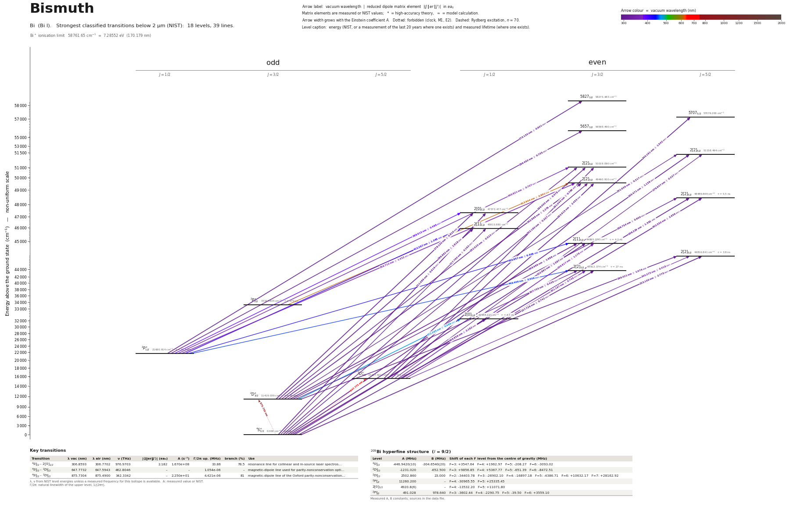

Bismuth energy level diagram
Energy levels and transitions of neutral bismuth (Bi I): the 39 strongest classified lines below 2 µm from the NIST Atomic Spectra Database and the 18 levels they connect, each line with its vacuum wavelength, frequency and, for 37 of them, the reduced dipole matrix element derived from the NIST transition rate. Measured lifetimes, transition rates, hyperfine constants and isotope shifts from the literature are included, each with its citation.
Hover a line or a level to isolate it, click to keep it selected. Scroll to zoom, drag to move.

Download: diagram (PDF) diagram (SVG) transitions (CSV) levels (CSV) source code

Key transitions of bismuth
| Transition | λ vac (nm) | λ air (nm) | ν (THz) | |⟨J‖er‖J′⟩| (ea₀) | A (s⁻¹) | Γ/2π up. (MHz) | branch (%) | Use |
|---|---|---|---|---|---|---|---|---|
| 4S°3/2 – 2[0]1/2 | 306.8593 | 306.7702 | 976.9703 | 2.182 | 1.670e+08 | 33.86 | 78.5 | resonance line for collinear and in-source laser spectros… |
| 4S°3/2 – 2D°5/2 | 647.7732 | 647.5943 | 462.8046 | – | – | 1.054e-06 | – | magnetic-dipole line used for parity-nonconservation opti… |
| 4S°3/2 – 2D°3/2 | 875.7304 | 875.4900 | 342.3342 | – | 2.250e+01 | 4.421e-06 | 81 | magnetic-dipole line of the Oxford parity-nonconservation… |
λ, ν from NIST level energies unless a measured frequency for this isotope is available. A: measured value or NIST. Γ/2π: natural linewidth of the upper level, 1/(2πτ).
209Bi hyperfine structure (I = 9/2)
| Level | A (MHz) | B (MHz) | Shift of each F level from the centre of gravity (MHz) |
|---|---|---|---|
| 4S°3/2 | -446.9420(10) | -304.6540(20) | F=3: +3547.64 F=4: +1962.97 F=5: -208.27 F=6: -3093.02 |
| 2D°3/2 | -1231.020 | -652.500 | F=3: +9856.85 F=4: +5367.77 F=5: -651.39 F=6: -8472.51 |
| 2D°5/2 | 2502.860 | 23.000 | F=2: -34403.78 F=3: -26902.10 F=4: -16897.18 F=5: -4386.71 F=6: +10632.17 F=7: +28162.92 |
| 2P°1/2 | 11260.200 | – | F=4: -30965.55 F=5: +25335.45 |
| 2[0]1/2 | 4920.8(6) | – | F=4: -13532.20 F=5: +11071.80 |
| 2P°3/2 | 491.028 | 978.640 | F=3: -3602.44 F=4: -2290.75 F=5: -39.50 F=6: +3559.10 |
Measured A, B constants; sources in the data file.
Listed Bi transitions below 2 µm
| Lower level | Upper level | λ vacuum (nm) | λ air (nm) | ν (THz) | Type | |⟨J‖er‖J′⟩| (ea₀) | A (s⁻¹) | Branching (%) | Source of matrix element / A |
|---|---|---|---|---|---|---|---|---|---|
| 4S°3/2 | 2[2]5/2 | 195.4710 | – | 1533.6931 | E1 | 1.138 NIST | 5.860e+07 NIST | – | NIST ASD (accuracy B) |
| 4S°3/2 | 2[2]3/2 | 196.0051 | – | 1529.5138 | E1 | 0.478 NIST | 1.540e+07 NIST | – | NIST ASD (accuracy C+) |
| 4S°3/2 | 2[2]3/2 | 202.1799 | 202.1147 | 1482.8008 | E1 | 0.307 NIST | 5.790e+06 NIST | – | NIST ASD (accuracy C+) |
| 4S°3/2 | 2[2]5/2 | 206.2286 | 206.1628 | 1453.6897 | E1 | 1.581 NIST | 9.620e+07 NIST | 52.9 | NIST ASD (accuracy B) |
| 4S°3/2 | 2[0]1/2 | 211.0886 | 211.0217 | 1420.2211 | E1 | 0.916 NIST | 9.040e+07 NIST | – | NIST ASD (accuracy B) |
| 4S°3/2 | 2[1]1/2 | 217.7896 | 217.7214 | 1376.5235 | E1 | 0.163 NIST | 2.600e+06 NIST | – | NIST ASD (accuracy D+) |
| 4S°3/2 | 2[1]3/2 | 222.8905 | 222.8212 | 1345.0211 | E1 | 1.387 NIST | 8.800e+07 NIST | 37.8 | NIST ASD (accuracy C+) |
| 4S°3/2 | 2[2]5/2 | 223.1304 | 223.0611 | 1343.5751 | E1 | 2.775 NIST | 2.340e+08 NIST | 88.9 | NIST ASD (accuracy C+) |
| 4S°3/2 | 2[2]3/2 | 227.7262 | 227.6559 | 1316.4598 | E1 | 0.742 NIST | 2.360e+07 NIST | 63.7 | NIST ASD (accuracy B) |
| 2D°5/2 | 57075/2 | 240.1612 | 240.0881 | 1248.2968 | E1 | 1.542 NIST | 5.800e+07 NIST | – | NIST ASD (accuracy C+) |
| 2D°3/2 | 2[2]5/2 | 251.6391 | 251.5634 | 1191.3589 | E1 | 0.317 NIST | 2.130e+06 NIST | – | NIST ASD (accuracy C) |
| 2D°3/2 | 2[2]3/2 | 252.5249 | 252.4490 | 1187.1797 | E1 | 0.523 NIST | 8.600e+06 NIST | – | NIST ASD (accuracy C+) |
| 2D°3/2 | 2[2]3/2 | 262.8682 | 262.7899 | 1140.4666 | E1 | 1.279 NIST | 4.560e+07 NIST | – | NIST ASD (accuracy B) |
| 2D°3/2 | 2[2]5/2 | 269.7539 | 269.6738 | 1111.3555 | E1 | 0.600 NIST | 6.200e+06 NIST | 3.41 | NIST ASD (accuracy C+) |
| 2P°1/2 | 58273/2 | 273.1302 | 273.0494 | 1097.6172 | E1 | 0.901 NIST | 2.020e+07 NIST | – | NIST ASD (accuracy C+) |
| 2D°3/2 | 2[0]1/2 | 278.1298 | 278.0477 | 1077.8869 | E1 | 0.810 NIST | 3.090e+07 NIST | – | NIST ASD (accuracy B) |
| 2D°5/2 | 2[2]5/2 | 279.9474 | 279.8649 | 1070.8884 | E1 | 0.337 NIST | 1.750e+06 NIST | – | NIST ASD (accuracy D+) |
| 2D°5/2 | 2[2]3/2 | 281.0442 | 280.9615 | 1066.7092 | E1 | 0.766 NIST | 1.340e+07 NIST | – | NIST ASD (accuracy C+) |
| 2P°1/2 | 56573/2 | 286.4628 | 286.3787 | 1046.5319 | E1 | 0.705 NIST | 1.070e+07 NIST | – | NIST ASD (accuracy C+) |
| 2D°3/2 | 2[1]1/2 | 289.8816 | 289.7967 | 1034.1894 | E1 | 1.918 NIST | 1.530e+08 NIST | – | NIST ASD (accuracy B) |
| 2D°5/2 | 2[2]3/2 | 293.9153 | 293.8294 | 1019.9961 | E1 | 2.453 NIST | 1.200e+08 NIST | – | NIST ASD (accuracy B) |
| 2D°3/2 | 2[1]3/2 | 298.9891 | 298.9019 | 1002.6870 | E1 | 1.688 NIST | 5.400e+07 NIST | 23.2 | NIST ASD (accuracy C+) |
| 2D°3/2 | 2[2]5/2 | 299.4209 | 299.3336 | 1001.2409 | E1 | 1.074 NIST | 1.450e+07 NIST | 5.51 | NIST ASD (accuracy C+) |
| 2D°5/2 | 2[2]5/2 | 302.5502 | 302.4621 | 990.8851 | E1 | 2.659 NIST | 8.620e+07 NIST | 47.4 | NIST ASD (accuracy B) |
| 4S°3/2 | 2[0]1/2 | 306.8593 | 306.7702 | 976.9703 | E1 | 2.182 NIST | 1.670e+08 NIST | 78.5 | NIST ASD (accuracy B) |
| 2D°3/2 | 2[2]3/2 | 307.7554 | 307.6660 | 974.1257 | E1 | 0.436 NIST | 3.310e+06 NIST | 8.94 | NIST ASD (accuracy C+) |
| 2D°5/2 | 2[1]3/2 | 339.8173 | 339.7198 | 882.2165 | E1 | 1.178 NIST | 1.790e+07 NIST | 7.7 | NIST ASD (accuracy C) |
| 2D°5/2 | 2[2]5/2 | 340.3752 | 340.2776 | 880.7705 | E1 | 0.418 NIST | 1.500e+06 NIST | 0.57 | NIST ASD (accuracy C) |
| 2P°1/2 | 2[2]3/2 | 340.6206 | 340.5229 | 880.1360 | E1 | 0.707 NIST | 6.400e+06 NIST | – | NIST ASD (accuracy D+) |
| 2D°5/2 | 2[2]3/2 | 351.1868 | 351.0864 | 853.6552 | E1 | 0.746 NIST | 6.500e+06 NIST | 17.5 | NIST ASD (accuracy C+) |
| 2P°1/2 | 2[2]3/2 | 359.7123 | 359.6097 | 833.4229 | E1 | 1.332 NIST | 1.930e+07 NIST | – | NIST ASD (accuracy C+) |
| 2P°1/2 | 2[0]1/2 | 388.9149 | 388.8048 | 770.8433 | E1 | 0.488 NIST | 4.100e+06 NIST | – | NIST ASD (accuracy D+) |
| 2P°1/2 | 2[1]1/2 | 412.2867 | 412.1704 | 727.1457 | E1 | 1.065 NIST | 1.640e+07 NIST | – | NIST ASD (accuracy C+) |
| 2P°1/2 | 2[1]3/2 | 430.9572 | 430.8360 | 695.6433 | E1 | 0.503 NIST | 1.600e+06 NIST | 0.69 | NIST ASD (accuracy D) |
| 2P°1/2 | 2[2]3/2 | 449.4087 | 449.2827 | 667.0820 | E1 | 0.506 NIST | 1.430e+06 NIST | 3.86 | NIST ASD (accuracy D+) |
| 2D°3/2 | 2[0]1/2 | 472.3848 | 472.2527 | 634.6361 | E1 | 0.989 NIST | 9.400e+06 NIST | 4.42 | NIST ASD (accuracy B) |
| 2P°3/2 | 2[2]3/2 | 613.6436 | 613.4738 | 488.5449 | E1 | 0.891 NIST | 1.740e+06 NIST | – | NIST ASD (accuracy D+) |
| 4S°3/2 | 2D°5/2 | 647.7732 | 647.5943 | 462.8046 | M1 | – | – | – | – |
| 4S°3/2 | 2D°3/2 | 875.7304 | 875.4900 | 342.3342 | M1 | – | 2.250e+01 NIST | 81 | NIST ASD (accuracy B+) |
Reduced dipole matrix elements follow the convention A = ω³|d|²/(3πε₀ħc³(2J′+1)), with J′ the upper level. Tags show where a number comes from: measured, NIST compilation, high-accuracy theory, or a model calculation.
Bi energy levels
Bi⁺ ionisation limit 58761.65 cm⁻¹ = 7.28552 eV (170.179 nm)
Sources
- Andersen, Madsen, Sørensen, "Radiative Lifetimes in Sn I and Bi I", J. Opt. Soc. Am. 62, …
- Hull, Brink, Phys. Rev. A 1, 685 (1970) (atomic-beam magnetic resonance); Pearson et al.,…
- Krogulec, Wojtkowiak, Heldt, Acta Phys. Pol. A 60, 591 (1981) (time-of-flight on an elect…
- Liu, Yu, Suo, Liu, Sahoo, "Investigating properties of heavy and superheavy atomic system…
- NIST ASD
- NIST ASD level energies
- values labelled 'Exp. 2021' with reference Wilman, Elantkowska, Ruczkowski, J. Quant. Spe…
NIST labels the even levels in J1K notation; the LS names used in the literature are given in brackets. The 1972 beam-foil lifetimes were read from the publisher's abstract page by an automated reader: verify before relying on them, and prefer Luo et al. 1995 once accessible. Hyperfine constants of the 6p3 2D and 2P levels are second-hand and printed without uncertainties. The 'use' strings of the two M1 lines carry the parity-violation results because the schema has no field for them.
Atoms with measured data
- Lithium-632 levels, 85 lines
- Lithium-732 levels, 85 lines
- Beryllium-917 levels, 26 lines
- Sodium-2336 levels, 106 lines
- Magnesium-2418 levels, 61 lines
- Magnesium-2518 levels, 61 lines
- Potassium-3934 levels, 84 lines
- Potassium-4034 levels, 84 lines
- Potassium-4134 levels, 84 lines
- Calcium-4035 levels, 61 lines
- Calcium-4335 levels, 61 lines
- Rubidium-8536 levels, 94 lines
- Rubidium-8736 levels, 94 lines
- Strontium-8740 levels, 70 lines
- Strontium-8840 levels, 70 lines
- Caesium-13331 levels, 79 lines
- Barium-13744 levels, 89 lines
- Barium-13844 levels, 89 lines
- Dysprosium-16339 levels, 55 lines
- Dysprosium-16439 levels, 55 lines
- Ytterbium-17118 levels, 26 lines
- Ytterbium-17418 levels, 26 lines